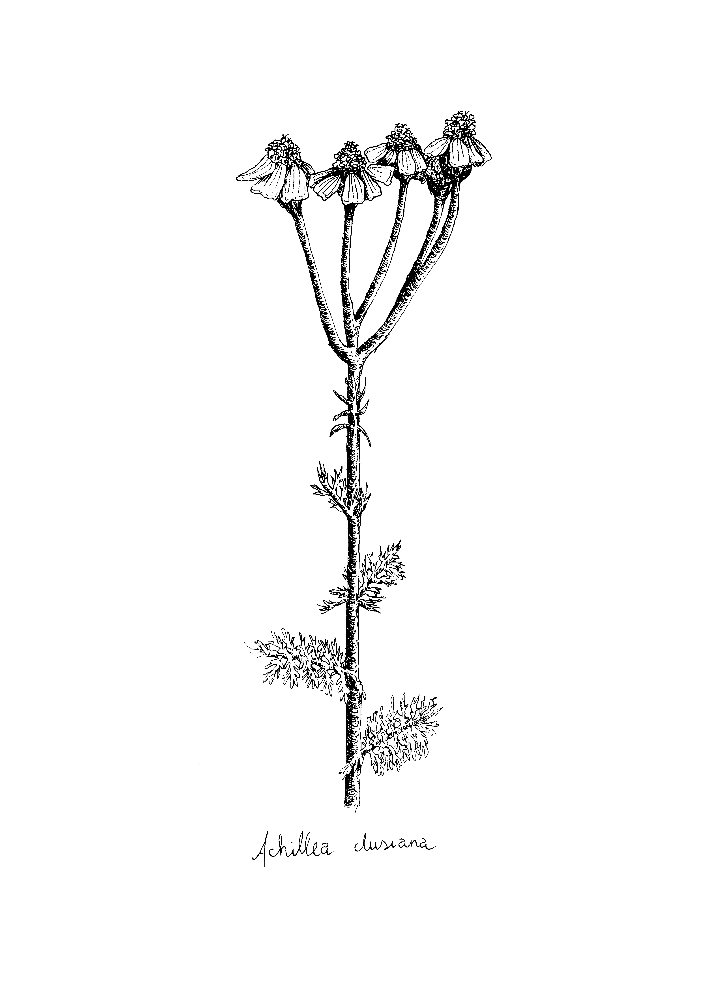
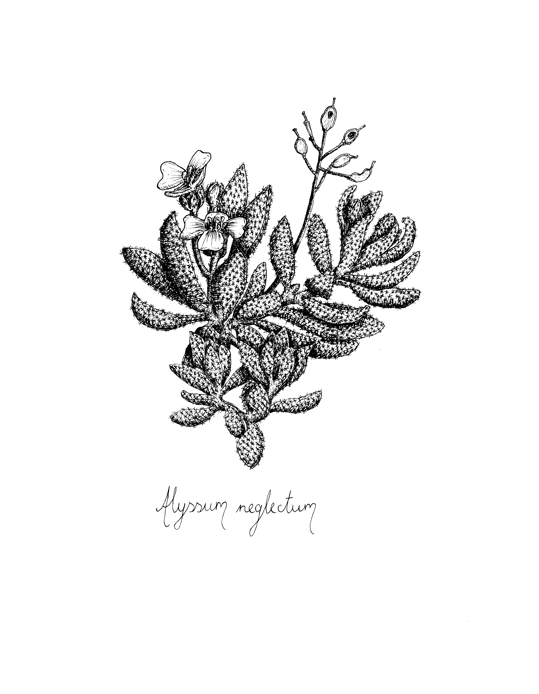
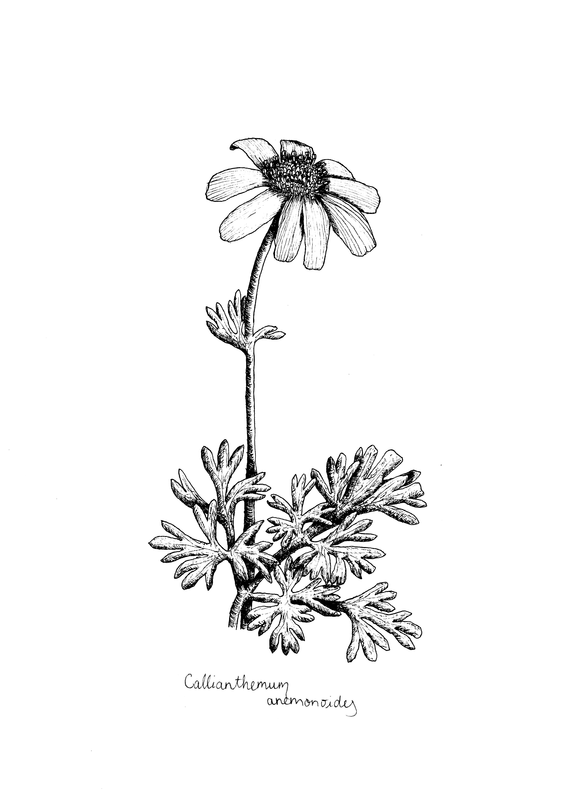
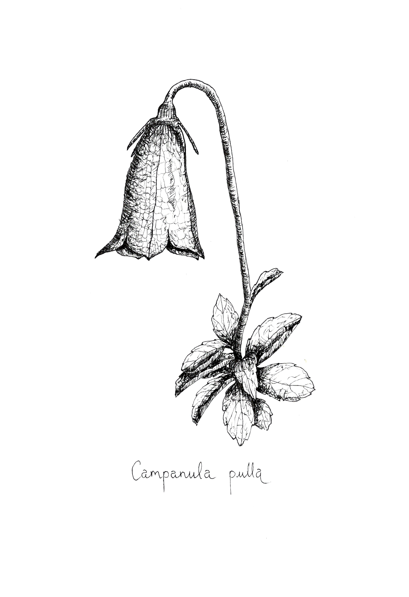
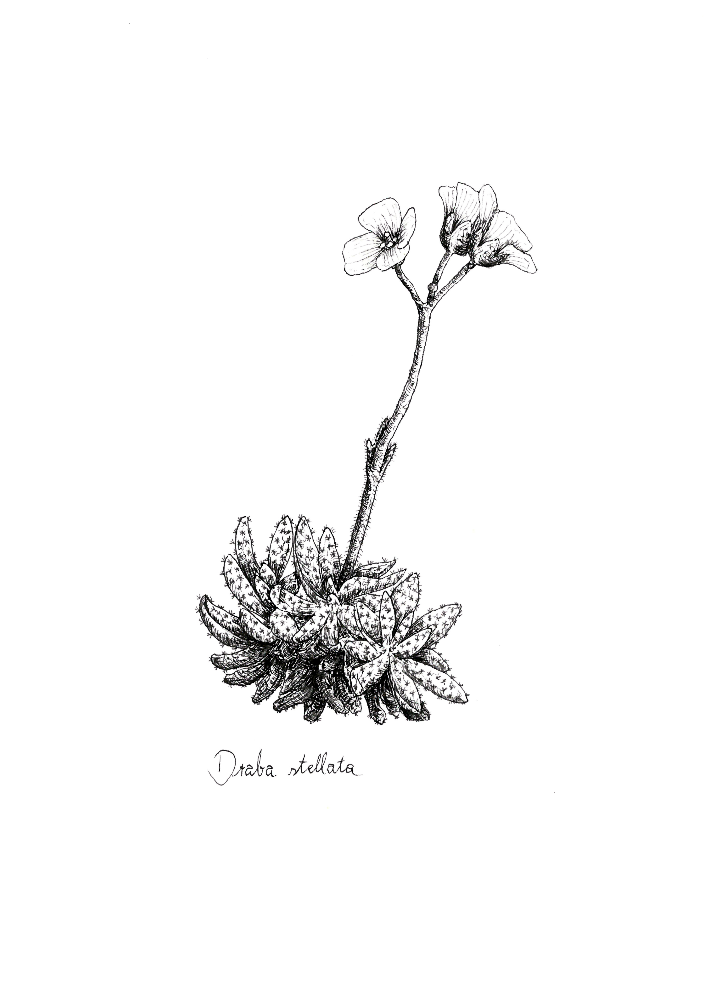
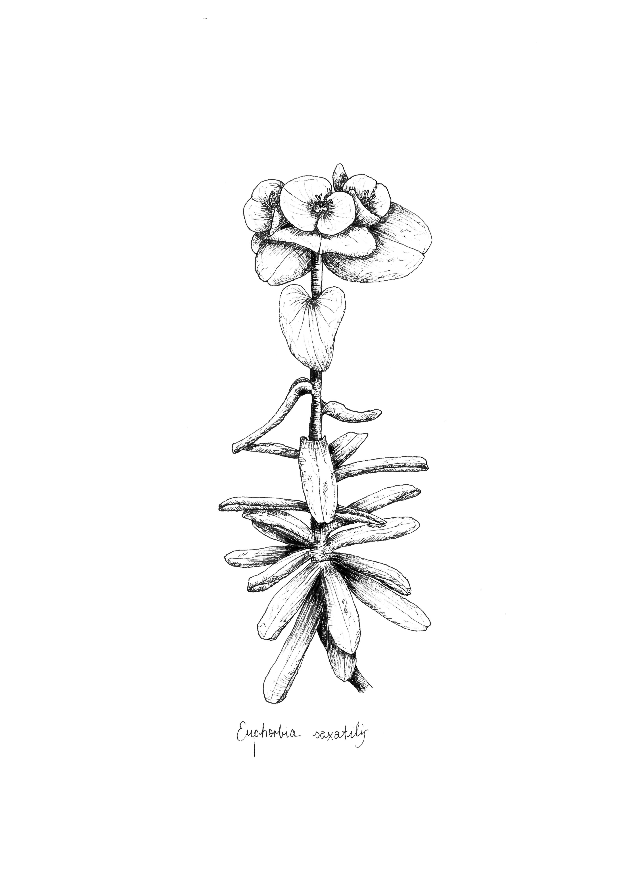
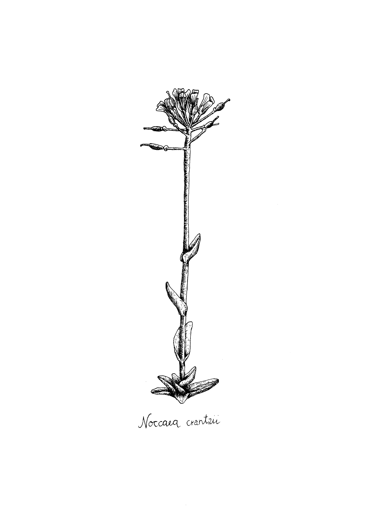
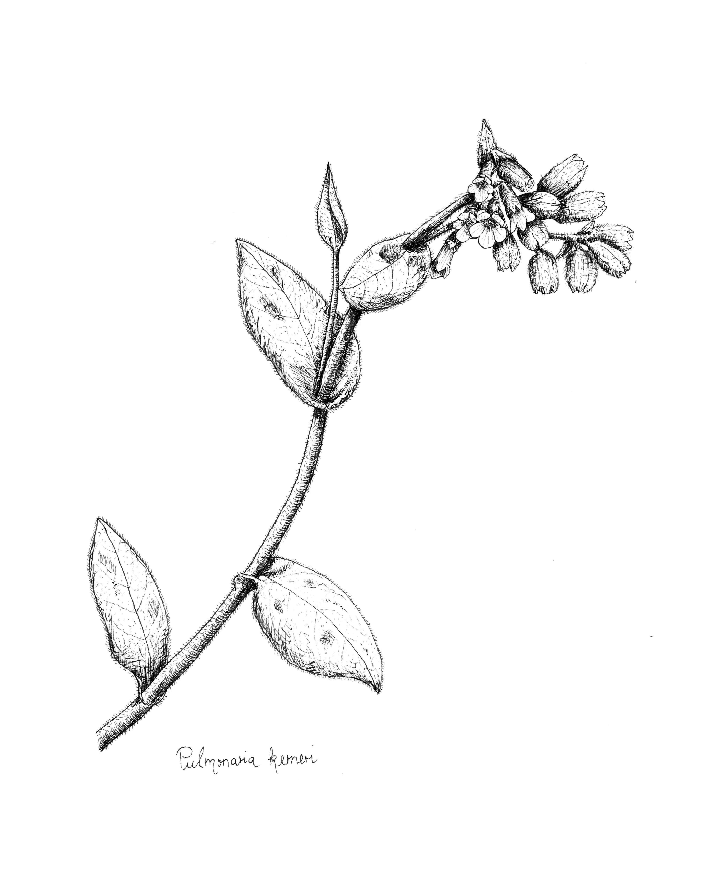
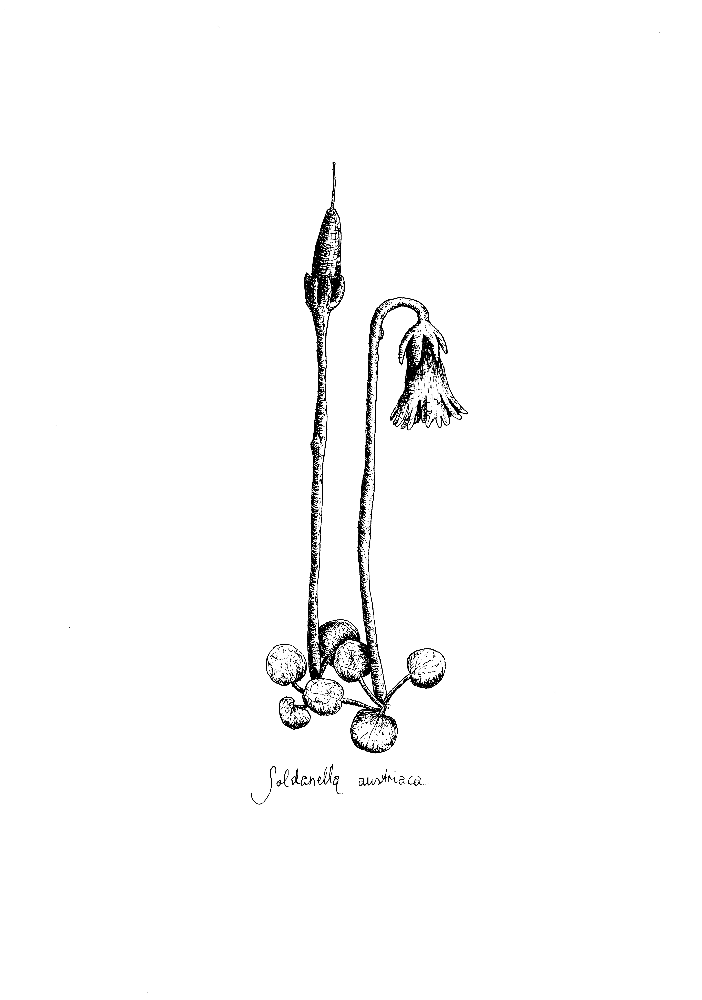

Im Rahmen des Endemitenprojekts der Universität Innsbruck illustrierte ich die neun endemischen Pflanzenarten. Mehr Informationen unter https://www.uibk.ac.at/de/projects/endemiten/projekt/








